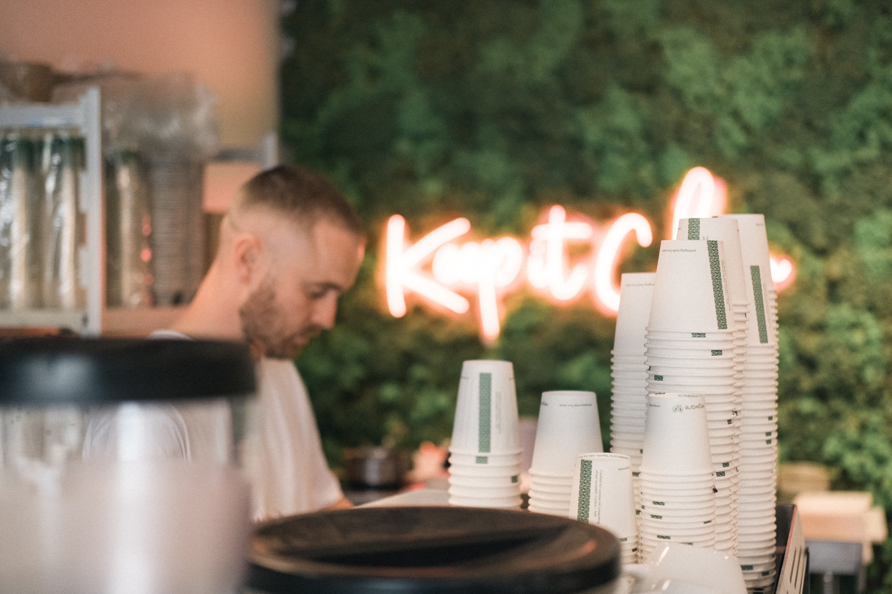

Local small business owners, entrepreneurs. Age: 21-65 years old.
Two Personas
Amy Brown
Title: blogger, showroom owner
Goals and tasks: Amy wants to become a part of the Chamber of commerce to find like-minded people. She also would like to meet other businesses to possibly collaborate with them in the future.
Enviroment: Amy spends most of her time on her phone, as she is a blogger and this is an integral part of her life. She is also very comfortable with using a computer.
Quote:"If you're happy doing what you are doing, then nobody can tell you you're not successful."
John Jackson

Title: entrepreneur, cafe owner
Goals and tasks: John is looking for investors. He opened his first cafe a year ago and now wants to expand his business.
Enviroment: John is comfortable with using computer and POS system.
Quote:"To be successful, you have to have your heart in your business, and your business in your heart."
Scenarios
Who can attend Chamber events?
Why should I join the Chamber?
How can the Chamber promote my organization?
What is the cost for Chamber membership?
How can I use the Chamber for establishing business leads and contacts?